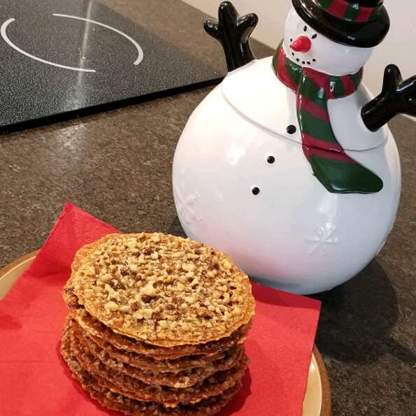

Lace Cookies

Description
This was one of my favorite recipes my mom made growing up.
They are very thin oatmeal sugar cookies that melt in your mouth!
Ingredients
- 1.5 cups raw almonds
- 1/2 cup unsalted butter
- 3/4 cup light brown sugar
- 1/4 cup honey
- 1/2 teaspoon vanilla extract
- 1 pinch salt
- 3 tablespoons all-purpose flour
- 1 cup semisweet chocolate chips, melted
Steps
- Preheat the oven to 350 degrees F (175 degrees C). Line a baking sheet with a silicone liner (such as Silpat®).
- Place almonds into the bowl of a food processor; alternate pulsing and running at full speed every few seconds until finely chopped and crumblike. Be careful not to go too far; you don't want them too fine and pasty.
- Combine butter, brown sugar, and honey in a saucepan over medium heat. Stir a few times and cook until melted and dissolved. Bring to a boil, then carefully remove from the heat.
- Add vanilla extract, salt, and flour, and whisk until smooth. Add chopped almonds and mix with a spatula until everything is combined.
- Drop eight uniformly sized, rounded spoonfuls of batter (each about 2 teaspoons, or 15 grams) onto the prepared sheet. Fine-tune the cookie shapes and make sure they are evenly spaced.
- Place in the center of the preheated oven and bake until golden brown and a bit darker around the outsides, 10 to 12 minutes, rotating the pan halfway through.
- Remove from the oven and slide the silicone liner off the baking sheet and directly onto the countertop. Allow to sit until cool and crisp, 3 to 5 minutes, then gently peel cookies off the liner. Repeat to bake remaining batches.
- Spread melted chocolate over the flat side of one cookie. Place a second cookie, flat-side down, on top to make a sandwich and press very gently to seal. Repeat to form remaining cookies. Let sit until chocolate has firmed up, about 30 minutes.